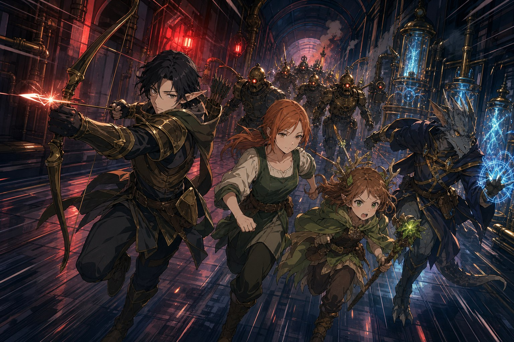
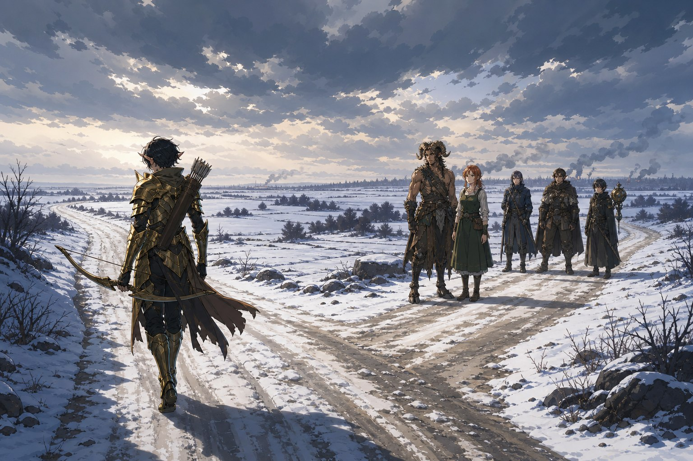
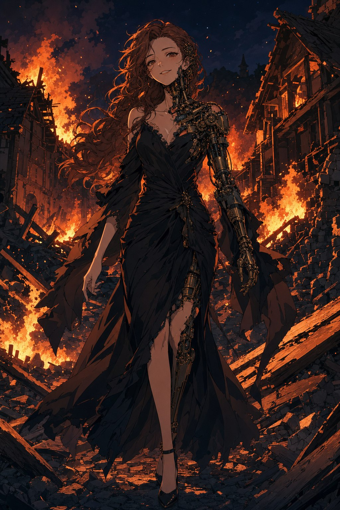

마법적으로 보호된 문은 부술 수 없었고, 경비 로봇들이 끝없이 밀려왔다. 소리장치 너머로는 에일라와 똑같은 목소리가 킥킥 웃으며 타임필드를 조롱했다. “당신은 세라? 정말 세라잖아? 아르카딘 님을 버리고 잘도 살아있었네.” 타임필드가 이를 악물고 바라는 것이 무엇이냐 묻자, 목소리는 대뜸 소리쳤다. “에일라를 넘겨!” 세틀러가 “어이, 네가 에일라라며?” 하고 되받자, 소리장치 너머에서 머리끝까지 화가 난 듯한 비명 같은 기계음이 찢어지듯 울렸다. 에일라는 표정 없이 귀를 막으며 그 자리에 쪼그려 앉았다.
동력실로 향했다. 세라의 연구소는 시간축 위에 지어진 탓에, 시공간 고정장치를 끄면 외부에서 접근할 방법이 타임브레이커뿐이 된다. 하지만 나머지 전원을 모두 끄고 한 곳에 동력을 집중하면 과부하를 일으킬 수 있었다. 경비 로봇들을 정리하며 스위치를 조작해, 그들은 간신히 연구소를 빠져나왔다.
거절합니다
연구소 바깥 공터에는 기계 인형들이 기다리고 있었다. “에일라! 보고 싶었어!” 자신을 아느냐는 물음에 기계들은 당연하다는 듯 답했다. 너는 우리와 있어야 완벽해지고, 우리와 있어야 행복할 수 있다고. 에일라는 짧게 대답했다. “거절합니다. 저는 행복을 느낄 수 없어요.” 그러자 기계들이 “그럼 강제로 데려가는 수밖에” 하고 덤벼들었고, 타임필드가 “이제야 얘기가 간단해지는군” 하고 나섰다. 세틀러가 씩 웃으며 “박살내는 수밖에” 했고, 타임필드는 말없이 피식 웃었다.
삽자루 기계인형과 처형자 기계인형은 지금까지와 차원이 다르게 강했다. 완전히 이 목적을 위해 전문적으로 만들어진 기계들이었다. 격전 끝에 그들을 쓰러뜨린 뒤, 철판에서 ‘제조 및 승인: 프렐로트 공장’이라는 글씨를 발견했다. 서쪽의 폐공장. 세틀러는 실반의 부품에도 그런 글씨가 있었던 것 같다고 했다.

갈림길
서쪽으로 향하던 길에 넘어진 마차와 쓰러진 사람들을 마주쳤다. 처형자 기계인형이 하플링 하나를 어깨에 지고 북쪽으로 가고 있었고, 곁에서는 갈라파 용병이 삽자루와 멀뚱히 대치하고 있었다. 하플링은 “돈을 받았으면 일을 제대로 해야 될 거 아냐!” 하고 용병에게 온갖 욕을 퍼붓는 중이었다. 기계들을 정리하자 하플링은 자신을 상인 피키라 밝혔다. 기계들은 재물을 노린 것도 암살을 노린 것도 아니고, 그저 마차를 뒤엎어 무언가를 찾다가 자신을 데려가려 했다고 했다.
타임필드가 발자국을 살피고 눈을 걷어내자 흙 위에 인형들의 자취가 드러났다. 에일라가 다가가 확인했다. “기계인형들이 북쪽으로 향했습니다. 여기서 북쪽에는 린들필드 마을이 있는데요.” 열 기 정도의 인형이라면 마을 하나를 초토화하기 충분했다. 세틀러의 손이 떨렸다. 린들필드에는 자신이 기억을 잃었을 때에도 빚을 많이 졌다며, 그는 북쪽으로 가겠다고 했다. 타임필드는 그 인형들을 멈추려면 근원인 서쪽 공장으로 가야 한다고 맞섰다. 두 사람의 길이 갈렸다. 그때 에일라가 나섰다. “세틀러. 저도 가겠습니다. 제가 조금 더 도움이 되는 곳에 있고 싶습니다.” 타임필드가 그녀를 불렀지만 에일라의 뜻은 변하지 않았다. 타임필드는 하늘을 보며 짧게 한숨을 쉬고는 홀로 서쪽 공장으로 떠났다. 세틀러와 에일라, 그리고 세 사람은 불타는 마을을 향해 북으로 달렸다.

불타는 린들필드
린들필드는 멀리서부터 이미 불타고 있었다. 세틀러는 혼자 전력으로 여관을 향해 달리며 유리드의 이름을 외쳤다. 잔해 속에서 죽기 직전의 유리드를 끌어내 간신히 응급처치를 했다. 유리드가 목구멍에서 단어를 쥐어짜냈다. “에일라를, 찾고 있었어요. 도망쳐요. 아직.”
에일라가 고개를 숙였다. “저 때문에 많은 사람들이 피해를 입었습니다. 이번에는 많은 사람들이 죽었습니다.” 감정도 기억도 의지도 없는 자신 때문에 이렇게 많은 일이 벌어지는 것이 부당하다고, 그녀는 표정 없는 얼굴로 입술을 깨물며 말했다. “그들이 원하는 대로 가는 쪽이 나은 게 아닐까요.” 그때 낯선 목소리가 끼어들었다. “좋은 생각이에요.”
무너진 건물 뒤쪽에서 누군가 파편을 밟지 않으려 애쓰며 우아하게 걸어 나왔다. 검은 드레스에 길고 부드러운 갈색 머릿결의 여성이 기분 좋게 미소지었다. 하지만 턱선부터 어깨까지 정교한 톱니바퀴와 유압 실린더가 드러나 있어, 그녀가 기계 인형임을 알 수 있었다. 그녀는 유리드를 한 손으로 들어 벽에 던지고, 달려드는 세틀러마저 귀찮다는 듯 팔로 날려버렸다. 그러고는 오직 에일라만을 똑바로 바라보았다. “실제로 만나는 건 처음이군요.” 에일라와 똑같지만 조금 어린 목소리였다.
에일라가 무언가 떠올린 듯 말했다. “아르카딘이 만든 기계 생명체. 기계 에일라.” 검은 드레스의 그녀가 고개를 갸웃하며 물었다. “언니. 어떻게 살아있는 걸까요? 아르카딘 연구소 피험체 178번. 통칭 에러 하트.” 그 이름이, 전혀 예상치 못한 입에서 지금껏 알던 에일라를 가리키며 불려 나왔다. 두 명의 에일라가 처음 마주 선 그 자리에서, 불타는 마을의 밤이 저물었다.